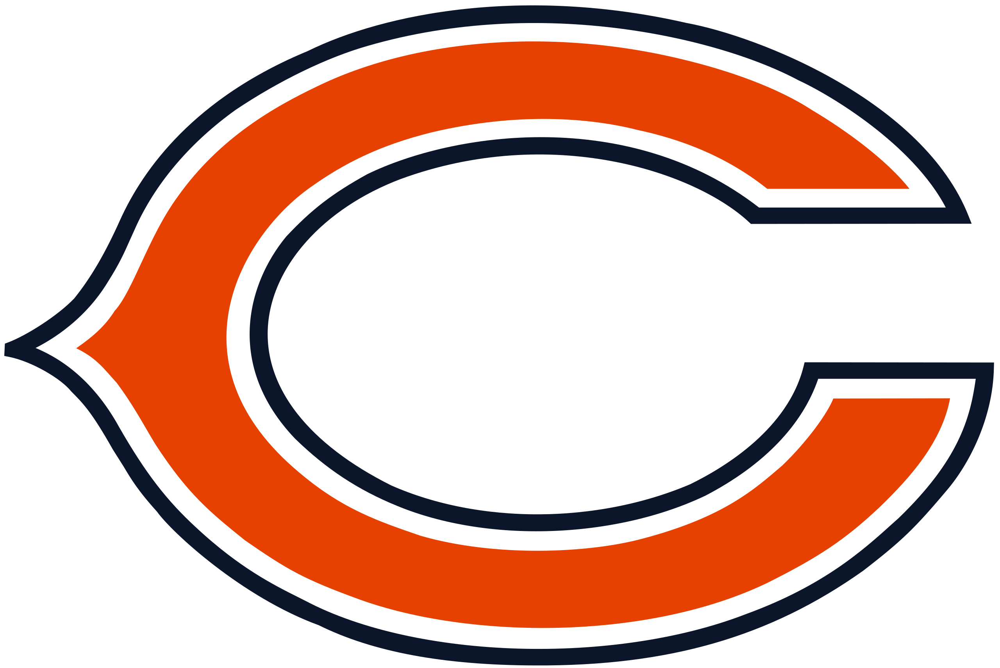
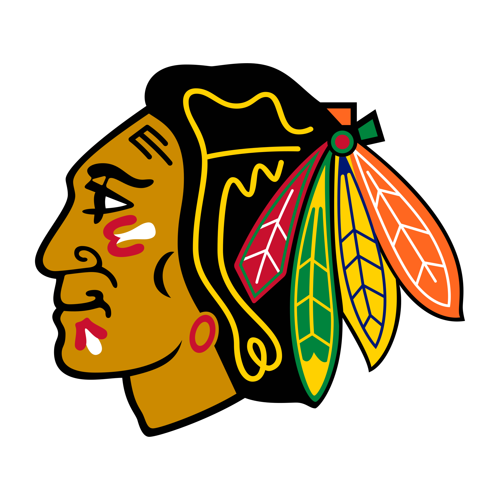

I am so happy that I am from Chicago because in my opinion, we have the best sports teams in the entire world! The passion and love that we share for all of our teams is heartwarming. All of my favorite teams are from Chicago, but my three favorite are the Chicago Bulls, Chicago Blackhawks, and the Chicago Bears
First, my favorite team of all time is definitely the Chicago Bears. I am what people call a die-hard fan. I haven't missed a single game in years, and I can name almost everyone on the roster. Watching the Bears every week and following all of the news about them fills me with so much joy (even though they always dissapoint me). I think that the 85' Bears team is the most iconic team of all time. They literally made a dance video called the Superbowl Shuffle BEFORE winning the superbowl! Isn't that crazy?
Background image: Chicago Bears Logo by Chicago Bears at https://commons.wikimedia.org/wiki/File:Chicago_Bears_logo.svg, CC0
I also love the Chicago Bulls. They are always a very fun team to watch, especially when Derrick Rose was on our team a couple years ago. The Chicago Bulls also have great history, considering they won the championship 3 times in a row TWICE. The Chicago Bulls in 96' are considered by many to be the best basketball team of all time. Finally, the trio of Michael Jordan, Scottie Pippen, and Dennis Rodman is almost certainly the best trio in NBA history.

Background image: Chicago Bulls Logo by Chicago Bulls at https://commons.wikimedia.org/wiki/File:Chicago_Bulls_wordmark.gif, CC0
Finally, the Chicago Blackhawks are a great team with iconic history. I have a strong bond with this team because I watched nearly every Blachawks game with my family when I was younger. My family also regularly got tickets to games, which made the experience so enjoyable. Some of my best memories are watching the Chicago Blackhawks score iconic goals and dancing with an entire stadium of 23,000 fans to the best goal song in the NHL. The Chicago Blackhawks won the Stanley Cup 3 times within 5 years in 2010, 2013, and 2015, and they were a powerful dynasty during this time. This team had so many iconic players like Jonathan Toewes, Patrick Kane, and Duncan Keith just to name a few.
Background image: Chicago Blackhawks Logo by Chicago Blackhawks at https://commons.wikimedia.org/wiki/File:BlackhawksWordmark.png, CC0